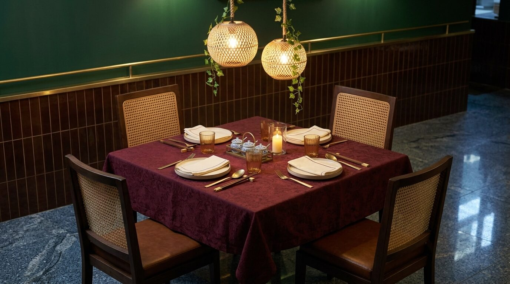
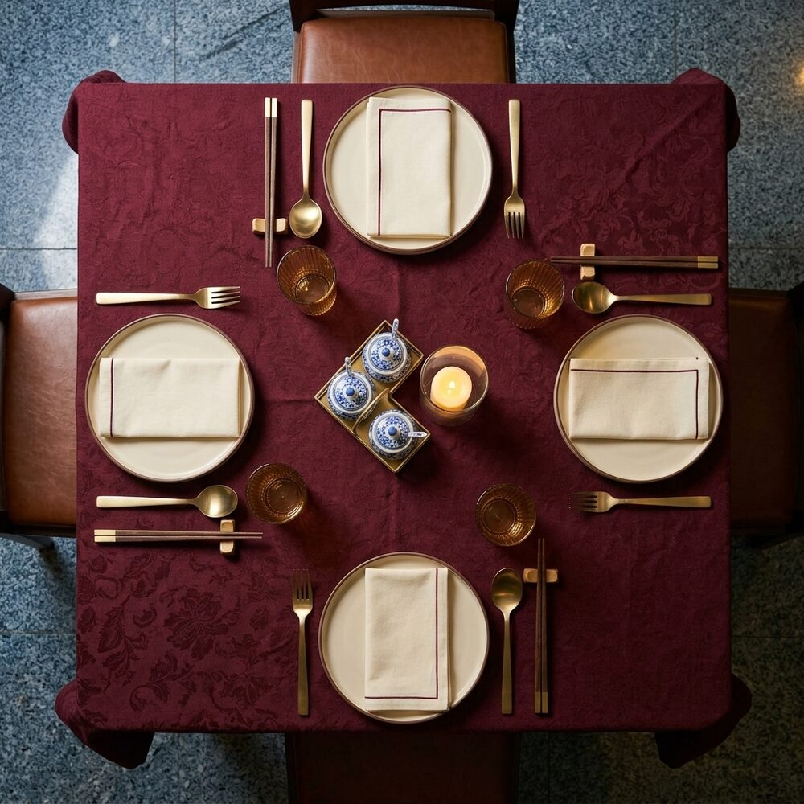

One list of everything the restaurant needs to open, apart from kitchen and bar equipment (in the equipment plan) and plates and glasses (on the crockery page). It runs from tables and chairs down to tissues, bin bags and toilet rolls. Each line is marked must have to open or add later, so you can buy in two rounds.
You have ten square tables of 80 × 80 cm. The 3D model seats 40: five of the square tables as four-tops, two new tables for six and four new tables for two. That matches your 40-cover crockery. If all ten square tables go out, the room seats 60. Pick one and every count below changes to match.
The pieces that set the look. The chair is the one in your 3D model and decor renders: dark walnut frame, woven cane back, cognac seat.
How every table looks when the doors open, before anyone sits down. Lay it the same way every time, so the room looks calm and any staff member can reset a table in two minutes. The drawings are to scale (1 square = 10 cm) and use the pieces on the crockery page.


One person walks every table with this list. Ticks clear themselves each day.
Every light in the 3D model, and how bright it should be at each point of the day. Numbers are the dimmer setting (100 = full). They match the model's Lighting presets (Lunch, Sunset, Evening, Late), so you can preview each one there.